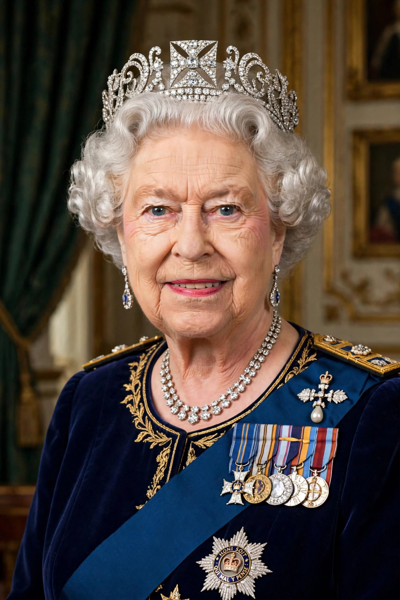

| Elizabeth II | |
|---|---|
 | |
| Reign | 6 February 1952 – 8 September 2022 |
| Coronation | 2 June 1953 |
| Born | 21 April 1926, Mayfair, London |
| Died | 8 September 2022 (aged 96), Balmoral Castle, Scotland |
| Spouse | Prince Philip, Duke of Edinburgh (m. 1947; d. 2021) |
| Children | Charles III; Anne, Princess Royal; Prince Andrew; Prince Edward |
| Successor | Charles III |
Elizabeth II (Elizabeth Alexandra Mary; 21 April 1926 – 8 September 2022) was Queen of the United Kingdom and other Commonwealth realms from 6 February 1952 until her death. She was queen regnant of 32 sovereign states over the course of her reign and head of state of 15 realms at the time of her death. Her reign of 70 years and 214 days is the longest of any British monarch and the longest verified reign of any female head of state in history.
Elizabeth was born in London as the first child of the Duke and Duchess of York (later King George VI and Queen Elizabeth). She was not expected to become queen, but her uncle Edward VIII's abdication in 1936 made her father king and her heir presumptive. During the Second World War she served in the Auxiliary Territorial Service, training as a driver and mechanic. In November 1947 she married Philip Mountbatten, a former prince of Greece and Denmark; they were married for more than 73 years, until his death in April 2021. Their first child, Charles, was born in 1948.
Elizabeth became queen on the death of her father while she was in Kenya on a Commonwealth tour; her coronation at Westminster Abbey on 2 June 1953 was the first to be fully televised. Her reign saw the transformation of the British Empire into the Commonwealth of Nations (see the London Declaration), the United Kingdom's accession to and withdrawal from the European Union, devolution within the UK, and profound social change. She celebrated Silver (1977), Golden (2002), Diamond (2012) and Platinum (2022) Jubilees — the last a first for a British monarch. The year 1992, marked by family marital breakdowns and a fire at Windsor Castle, she herself described as an annus horribilis. At the summits of the association she appeared as Head of the Commonwealth, a role created for her father and later confirmed for her successor at the 2018 Commonwealth Heads of Government Meeting.
Elizabeth died at Balmoral Castle on 8 September 2022, aged 96, and was succeeded by her eldest son, Charles III. Her state funeral on 19 September 2022 was attended by hundreds of world leaders and watched by a global television audience; she was interred beside her husband in the King George VI Memorial Chapel at St George's Chapel, Windsor.